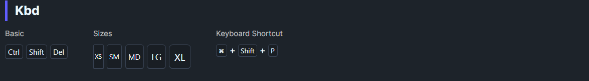

DaisyKbd renders keyboard keycaps for inline hints (e.g., shortcuts). It provides 5 size presets, monospace text, a subtle 3D border, and centered content. Use it to display keys like Ctrl, Shift, or Cmd in docs and tooltips.
| Size | Height | Padding | Font Size |
|---|---|---|---|
| ExtraSmall | 16 | 2,0 | 10 |
| Small | 20 | 3,0 | 11 |
| Medium (default) | 24 | 4,0 | 12 |
| Large | 32 | 6,0 | 14 |
| ExtraLarge | 40 | 8,0 | 16 |
<TextBlock>
Press <controls:DaisyKbd Content="Ctrl" /> + <controls:DaisyKbd Content="S" /> to save.
</TextBlock>
<controls:DaisyKbd Size="Small" Content="Esc" />
<controls:DaisyKbd Size="Large" Content="Shift" />